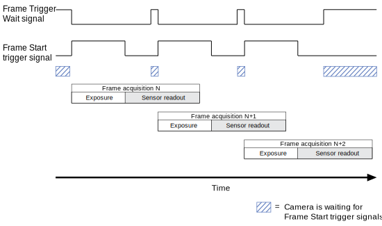

Line Source#
This allows you to monitor the status of the camera or to control external devices. For example, you can monitor if the camera is currently exposing or you can control external flash lighting.
For each camera output line, you can set exactly one signal.
Info
- For the pin numbering and pin assignment of the I/O connector, see your camera topic. You can find your camera topic in the "Models" section.
- The camera sends all output signals with a short propagation delay. The delay is usually in the microseconds range.
Using the Feature#
Setting the Line Source#
To set the line source:
- Set the
LineSelectorparameter to an I/O line configured as output, e.g.,Line2. - Set the
LineSourceparameter to one of the following values (if available):
Available Line Source Signals#
Depending on your camera model, the following line source signals are available:
Counter Active#
If available, you can use the camera's "Counter Active" signals, e.g., Counter 1 Active, to monitor the camera's Counter feature. The signal goes high when the counter has been started. The signal goes low when the counter is stopped, reset, or when it has reached its maximum value.
Exposure Active#
If available, you can use the Exposure Active signal to monitor if the camera is currently exposing. The signal goes high when exposure starts. The signal goes low when exposure ends. On rolling shutter cameras, the signal goes low when exposure for the last row has ended.
The Exposure Active signal can be used to trigger a flash.
The signal is also useful in situations where either the camera or the target object is moving. For example, assume that the camera is mounted on an arm mechanism that moves the camera to different sections of a product assembly. Typically, you don't want the camera to move during exposure. In this case, you can monitor the Exposure Active signal to know when exposure is taking place. This allows you to avoid moving the camera during that time.
Flash Window#
If available, you can use the Flash Window signal to determine when to use flash lighting. The signal goes high when you can start the flash lighting. The signal goes low when you should stop the flash lighting.
The signal indicates the period of time during a frame acquisition when all of the rows in the sensor are open for exposure.
Rolling Shutter Cameras#
On rolling shutter cameras, Basler recommends the use of flash lighting, especially when you are capturing images of fast-moving objects. Otherwise, images can be distorted due to the temporal shift between the different exposure starts of the individual rows.
The following diagram illustrates the timing of the Flash Window signal on rolling shutter cameras:
As shown above, on rolling shutter cameras, the Flash Window signal covers the period of time between the start of exposure of the last row (A) and the end of exposure of the first row (B).
On most rolling shutter cameras, you can calculate how long the flash window will remain open by using this formula:
Flash Window Width = Exposure Time - [ (tRow x (Image ROI Height - 1) ]
Info
On rolling shutter cameras, avoid extremely short exposure times or extremely large image ROIs. Otherwise, the exposure time for the first row may end before exposure of the last row starts, i.e., (B) occurs before (A). In that case, the Flash Window signal would always be low:
Global Reset Release Shutter Cameras#
On Global Reset Release shutter cameras, you must use flash lighting. Otherwise, the brightness in each acquired image may vary significantly from top to bottom due to the differences in the exposure times of the rows. Also, when you are capturing images of fast-moving objects, images may be distorted due to the temporal shift between the different exposure ends of the individual rows.
The following diagram illustrates the timing of the Flash Window signal on Global Reset Release shutter cameras:
As shown above, on Global Reset Release shutter cameras, the Flash Window signal spans the exposure time of the first row.
Global Shutter Cameras#
On global shutter cameras, the Flash Window signal is either not available or equivalent to the Exposure Active signal.
Frame Burst Active#
If available, you can use the Frame Burst Active signal to monitor if the camera is currently acquiring a series of images (a "burst" of images). The signal goes high when the acquisition of a series of images has been initialized. The signal goes low when the acquisition of a series of images has been finalized.
Serial Tx#
If available, you can use the Serial Tx signal to output serial data using the Serial Communication feature.
Sync User Output#
If available, you can use the Sync User Output signal to manually set the status of the line using the Sequencer feature.
The Sync User Output signal is similar to the User Output signal. The only difference is that Sync User Output signals can be controlled by the Sequencer feature, while the User Output signals can't.
The parameters related to the Sync User Output signals are also similar to the User Output parameters:
- The
SyncUserOutputValueparameter is the equivalent of theUserOutputValueparameter. - The
SyncUserOutputValueAllparameter is the equivalent of theUserOutputValueAllparameter. - The
SyncUserOutputSelectorparameter is the equivalent of theUserOutputSelectorparameter.
Timer Active#
You can use the camera's "Timer Active" signals, e.g., Timer 1 Active, to monitor the camera's Timer feature. The signal goes high after the delay specified. The signal goes low after the duration specified.
Info
The TimerStatus parameter, which is available on some camera models, can also take a value named TimerActive. However, this Timer Active status is different from the Timer Active signal: The signal is only high during the timer's duration, whereas the Timer Active status applies from the beginning of the timer delay until the end of the timer arm delay.
Trigger Wait#
You can use the camera's "Trigger Wait" signals, e.g., Frame Trigger Wait, to optimize triggered image acquisition and to avoid overtriggering.
Info
- Basler strongly recommends only to use the Trigger Wait signals when the camera is configured for hardware triggering. For software triggering, use the Acquisition Status feature.
- The Frame Burst Trigger Wait signal and the Acquisition Trigger Wait signal are identical, only the names differ. The naming depends on your camera model.
Trigger Wait signals go high when the camera is ready to receive trigger signals of the corresponding trigger type. When you apply the corresponding trigger signal, the Trigger Wait signal goes low. It stays low until the camera is ready to receive the next corresponding trigger signal.
For example, the Frame Trigger Wait signal goes high when the camera is ready to receive Frame Start trigger signals. When you apply a frame trigger signal, the signal goes low. It stays low until the camera is ready to receive the next Frame Start trigger signal:

Info
If you operate the camera with overlapping image acquisition and the Exposure Overlap Time Max feature is available on your camera model, you can use that feature to optimize the Frame Trigger Wait signal.
User Output#
You can set the status of a line by software. This can be useful to control external events or devices, e.g., a light source. For more information, see the User Output Value feature.
How to configure the output lines depends on how many User Output line sources are available on your camera model.
Configuration: One User Output Line Source Available#
If only one User Output line source is available ("User Output"):
- Set the
LineSelectorparameter toOut1. - Set the
LineSourceparameter toUserOutput.
Now, you can use the User Output Value feature to set the status of the line by software.
Configuration: Multiple User Output Line Sources Available#
If multiple User Output line sources are available (e.g., "User Output 1" and "User Output 2"):
- Set the
LineSelectorparameter to the desired output line, e.g.,Line2. -
If there is a user output signal assignment for your camera:
- Set the
LineSourceparameter according to the signal assignment.
Example: Assume that you selected Line 2 in step 1 and that the signal assignment is "User Output 1 → Line 2". In this case, you must set theLineSourceparameter toUserOutput1.
- Set the
-
If there is no user output signal assignment for your camera, i.e., the signals are freely selectable:
- Set the
LineSourceparameter to the desired line source, e.g.,UserOutput1.
- Set the
Now, you can use the User Output Value feature to set the status of the line by software.
Specifics#
| Camera Model | Available Line Sources | User Output Signal Assignment |
|---|---|---|
| a2A1920-51gcBAS | Counter 1 Active, Counter 2 Active Exposure Active Exposure Trigger Wait Frame Burst Active Frame Burst Trigger Wait Frame Trigger Wait Serial Tx Timer 1 Active, Timer 2 Active User Output 1, User Output 2, User Output 3 | No assignment, signals freely selectable |
| a2A1920-51gcPRO | Counter 1 Active, Counter 2 Active Exposure Active Exposure Trigger Wait Frame Burst Active Frame Burst Trigger Wait Frame Trigger Wait Serial Tx Timer 1 Active, Timer 2 Active User Output 1, User Output 2, User Output 3 | No assignment, signals freely selectable |
| a2A1920-51gmBAS | Counter 1 Active, Counter 2 Active Exposure Active Exposure Trigger Wait Frame Burst Active Frame Burst Trigger Wait Frame Trigger Wait Serial Tx Timer 1 Active, Timer 2 Active User Output 1, User Output 2, User Output 3 | No assignment, signals freely selectable |
| a2A1920-51gmPRO | Counter 1 Active, Counter 2 Active Exposure Active Exposure Trigger Wait Frame Burst Active Frame Burst Trigger Wait Frame Trigger Wait Serial Tx Timer 1 Active, Timer 2 Active User Output 1, User Output 2, User Output 3 | No assignment, signals freely selectable |
| a2A1920-160ucBAS | Counter 1 Active, Counter 2 Active Exposure Active Exposure Trigger Wait Frame Burst Active Frame Burst Trigger Wait Frame Trigger Wait Serial Tx Timer 1 Active, Timer 2 Active User Output 1, User Output 2, User Output 3 | No assignment, signals freely selectable |
| a2A1920-160ucPRO | Counter 1 Active, Counter 2 Active Exposure Active Exposure Trigger Wait Frame Burst Active Frame Burst Trigger Wait Frame Trigger Wait Serial Tx Timer 1 Active, Timer 2 Active User Output 1, User Output 2, User Output 3 | No assignment, signals freely selectable |
| a2A1920-160umBAS | Counter 1 Active, Counter 2 Active Exposure Active Exposure Trigger Wait Frame Burst Active Frame Burst Trigger Wait Frame Trigger Wait Serial Tx Timer 1 Active, Timer 2 Active User Output 1, User Output 2, User Output 3 | No assignment, signals freely selectable |
| a2A1920-160umPRO | Counter 1 Active, Counter 2 Active Exposure Active Exposure Trigger Wait Frame Burst Active Frame Burst Trigger Wait Frame Trigger Wait Serial Tx Timer 1 Active, Timer 2 Active User Output 1, User Output 2, User Output 3 | No assignment, signals freely selectable |
| a2A2448-23gcBAS | Counter 1 Active, Counter 2 Active Exposure Active Exposure Trigger Wait Frame Burst Active Frame Burst Trigger Wait Frame Trigger Wait Serial Tx Timer 1 Active, Timer 2 Active User Output 1, User Output 2, User Output 3 | No assignment, signals freely selectable |
| a2A2448-23gcPRO | Counter 1 Active, Counter 2 Active Exposure Active Exposure Trigger Wait Frame Burst Active Frame Burst Trigger Wait Frame Trigger Wait Serial Tx Timer 1 Active, Timer 2 Active User Output 1, User Output 2, User Output 3 | No assignment, signals freely selectable |
| a2A2448-23gmBAS | Counter 1 Active, Counter 2 Active Exposure Active Exposure Trigger Wait Frame Burst Active Frame Burst Trigger Wait Frame Trigger Wait Serial Tx Timer 1 Active, Timer 2 Active User Output 1, User Output 2, User Output 3 | No assignment, signals freely selectable |
| a2A2448-23gmPRO | Counter 1 Active, Counter 2 Active Exposure Active Exposure Trigger Wait Frame Burst Active Frame Burst Trigger Wait Frame Trigger Wait Serial Tx Timer 1 Active, Timer 2 Active User Output 1, User Output 2, User Output 3 | No assignment, signals freely selectable |
| a2A2448-75ucBAS | Counter 1 Active, Counter 2 Active Exposure Active Exposure Trigger Wait Frame Burst Active Frame Burst Trigger Wait Frame Trigger Wait Serial Tx Timer 1 Active, Timer 2 Active User Output 1, User Output 2, User Output 3 | No assignment, signals freely selectable |
| a2A2448-75ucPRO | Counter 1 Active, Counter 2 Active Exposure Active Exposure Trigger Wait Frame Burst Active Frame Burst Trigger Wait Frame Trigger Wait Serial Tx Timer 1 Active, Timer 2 Active User Output 1, User Output 2, User Output 3 | No assignment, signals freely selectable |
| a2A2448-75umBAS | Counter 1 Active, Counter 2 Active Exposure Active Exposure Trigger Wait Frame Burst Active Frame Burst Trigger Wait Frame Trigger Wait Serial Tx Timer 1 Active, Timer 2 Active User Output 1, User Output 2, User Output 3 | No assignment, signals freely selectable |
| a2A2448-75umPRO | Counter 1 Active, Counter 2 Active Exposure Active Exposure Trigger Wait Frame Burst Active Frame Burst Trigger Wait Frame Trigger Wait Serial Tx Timer 1 Active, Timer 2 Active User Output 1, User Output 2, User Output 3 | No assignment, signals freely selectable |
| a2A2590-22gcBAS | Counter 1 Active, Counter 2 Active Exposure Active Exposure Trigger Wait Frame Burst Active Frame Burst Trigger Wait Frame Trigger Wait Serial Tx Timer 1 Active, Timer 2 Active User Output 1, User Output 2, User Output 3 | No assignment, signals freely selectable |
| a2A2590-22gcPRO | Counter 1 Active, Counter 2 Active Exposure Active Exposure Trigger Wait Frame Burst Active Frame Burst Trigger Wait Frame Trigger Wait Serial Tx Timer 1 Active, Timer 2 Active User Output 1, User Output 2, User Output 3 | No assignment, signals freely selectable |
| a2A2590-22gmBAS | Counter 1 Active, Counter 2 Active Exposure Active Exposure Trigger Wait Frame Burst Active Frame Burst Trigger Wait Frame Trigger Wait Serial Tx Timer 1 Active, Timer 2 Active User Output 1, User Output 2, User Output 3 | No assignment, signals freely selectable |
| a2A2590-22gmPRO | Counter 1 Active, Counter 2 Active Exposure Active Exposure Trigger Wait Frame Burst Active Frame Burst Trigger Wait Frame Trigger Wait Serial Tx Timer 1 Active, Timer 2 Active User Output 1, User Output 2, User Output 3 | No assignment, signals freely selectable |
| a2A2590-60ucBAS | Counter 1 Active, Counter 2 Active Exposure Active Exposure Trigger Wait Frame Burst Active Frame Burst Trigger Wait Frame Trigger Wait Serial Tx Timer 1 Active, Timer 2 Active User Output 1, User Output 2, User Output 3 | No assignment, signals freely selectable |
| a2A2590-60ucPRO | Counter 1 Active, Counter 2 Active Exposure Active Exposure Trigger Wait Frame Burst Active Frame Burst Trigger Wait Frame Trigger Wait Serial Tx Timer 1 Active, Timer 2 Active User Output 1, User Output 2, User Output 3 | No assignment, signals freely selectable |
| a2A2590-60umBAS | Counter 1 Active, Counter 2 Active Exposure Active Exposure Trigger Wait Frame Burst Active Frame Burst Trigger Wait Frame Trigger Wait Serial Tx Timer 1 Active, Timer 2 Active User Output 1, User Output 2, User Output 3 | No assignment, signals freely selectable |
| a2A2590-60umPRO | Counter 1 Active, Counter 2 Active Exposure Active Exposure Trigger Wait Frame Burst Active Frame Burst Trigger Wait Frame Trigger Wait Serial Tx Timer 1 Active, Timer 2 Active User Output 1, User Output 2, User Output 3 | No assignment, signals freely selectable |
| a2A2600-20gcBAS | Counter 1 Active, Counter 2 Active Exposure Active Exposure Trigger Wait Frame Burst Active Frame Burst Trigger Wait Frame Trigger Wait Serial Tx Timer 1 Active, Timer 2 Active User Output 1, User Output 2, User Output 3 | No assignment, signals freely selectable |
| a2A2600-20gcPRO | Counter 1 Active, Counter 2 Active Exposure Active Exposure Trigger Wait Frame Burst Active Frame Burst Trigger Wait Frame Trigger Wait Serial Tx Timer 1 Active, Timer 2 Active User Output 1, User Output 2, User Output 3 | No assignment, signals freely selectable |
| a2A2600-20gmBAS | Counter 1 Active, Counter 2 Active Exposure Active Exposure Trigger Wait Frame Burst Active Frame Burst Trigger Wait Frame Trigger Wait Serial Tx Timer 1 Active, Timer 2 Active User Output 1, User Output 2, User Output 3 | No assignment, signals freely selectable |
| a2A2600-20gmPRO | Counter 1 Active, Counter 2 Active Exposure Active Exposure Trigger Wait Frame Burst Active Frame Burst Trigger Wait Frame Trigger Wait Serial Tx Timer 1 Active, Timer 2 Active User Output 1, User Output 2, User Output 3 | No assignment, signals freely selectable |
| a2A2600-64ucBAS | Counter 1 Active, Counter 2 Active Exposure Active Exposure Trigger Wait Frame Burst Active Frame Burst Trigger Wait Frame Trigger Wait Serial Tx Timer 1 Active, Timer 2 Active User Output 1, User Output 2, User Output 3 | No assignment, signals freely selectable |
| a2A2600-64ucPRO | Counter 1 Active, Counter 2 Active Exposure Active Exposure Trigger Wait Frame Burst Active Frame Burst Trigger Wait Frame Trigger Wait Serial Tx Timer 1 Active, Timer 2 Active User Output 1, User Output 2, User Output 3 | No assignment, signals freely selectable |
| a2A2600-64umBAS | Counter 1 Active, Counter 2 Active Exposure Active Exposure Trigger Wait Frame Burst Active Frame Burst Trigger Wait Frame Trigger Wait Serial Tx Timer 1 Active, Timer 2 Active User Output 1, User Output 2, User Output 3 | No assignment, signals freely selectable |
| a2A2600-64umPRO | Counter 1 Active, Counter 2 Active Exposure Active Exposure Trigger Wait Frame Burst Active Frame Burst Trigger Wait Frame Trigger Wait Serial Tx Timer 1 Active, Timer 2 Active User Output 1, User Output 2, User Output 3 | No assignment, signals freely selectable |
| a2A2840-14gcBAS | Counter 1 Active, Counter 2 Active Exposure Active Exposure Trigger Wait Frame Burst Active Frame Burst Trigger Wait Frame Trigger Wait Serial Tx Timer 1 Active, Timer 2 Active User Output 1, User Output 2, User Output 3 | No assignment, signals freely selectable |
| a2A2840-14gcPRO | Counter 1 Active, Counter 2 Active Exposure Active Exposure Trigger Wait Frame Burst Active Frame Burst Trigger Wait Frame Trigger Wait Serial Tx Timer 1 Active, Timer 2 Active User Output 1, User Output 2, User Output 3 | No assignment, signals freely selectable |
| a2A2840-14gmBAS | Counter 1 Active, Counter 2 Active Exposure Active Exposure Trigger Wait Frame Burst Active Frame Burst Trigger Wait Frame Trigger Wait Serial Tx Timer 1 Active, Timer 2 Active User Output 1, User Output 2, User Output 3 | No assignment, signals freely selectable |
| a2A2840-14gmPRO | Counter 1 Active, Counter 2 Active Exposure Active Exposure Trigger Wait Frame Burst Active Frame Burst Trigger Wait Frame Trigger Wait Serial Tx Timer 1 Active, Timer 2 Active User Output 1, User Output 2, User Output 3 | No assignment, signals freely selectable |
| a2A2840-48ucBAS | Counter 1 Active, Counter 2 Active Exposure Active Exposure Trigger Wait Frame Burst Active Frame Burst Trigger Wait Frame Trigger Wait Serial Tx Timer 1 Active, Timer 2 Active User Output 1, User Output 2, User Output 3 | No assignment, signals freely selectable |
| a2A2840-48ucPRO | Counter 1 Active, Counter 2 Active Exposure Active Exposure Trigger Wait Frame Burst Active Frame Burst Trigger Wait Frame Trigger Wait Serial Tx Timer 1 Active, Timer 2 Active User Output 1, User Output 2, User Output 3 | No assignment, signals freely selectable |
| a2A2840-48umBAS | Counter 1 Active, Counter 2 Active Exposure Active Exposure Trigger Wait Frame Burst Active Frame Burst Trigger Wait Frame Trigger Wait Serial Tx Timer 1 Active, Timer 2 Active User Output 1, User Output 2, User Output 3 | No assignment, signals freely selectable |
| a2A2840-48umPRO | Counter 1 Active, Counter 2 Active Exposure Active Exposure Trigger Wait Frame Burst Active Frame Burst Trigger Wait Frame Trigger Wait Serial Tx Timer 1 Active, Timer 2 Active User Output 1, User Output 2, User Output 3 | No assignment, signals freely selectable |
| a2A3840-13gcBAS | Counter 1 Active, Counter 2 Active Exposure Active Exposure Trigger Wait Frame Burst Active Frame Burst Trigger Wait Frame Trigger Wait Serial Tx Timer 1 Active, Timer 2 Active User Output 1, User Output 2, User Output 3 | No assignment, signals freely selectable |
| a2A3840-13gcPRO | Counter 1 Active, Counter 2 Active Exposure Active Exposure Trigger Wait Frame Burst Active Frame Burst Trigger Wait Frame Trigger Wait Serial Tx Timer 1 Active, Timer 2 Active User Output 1, User Output 2, User Output 3 | No assignment, signals freely selectable |
| a2A3840-13gmBAS | Counter 1 Active, Counter 2 Active Exposure Active Exposure Trigger Wait Frame Burst Active Frame Burst Trigger Wait Frame Trigger Wait Serial Tx Timer 1 Active, Timer 2 Active User Output 1, User Output 2, User Output 3 | No assignment, signals freely selectable |
| a2A3840-13gmPRO | Counter 1 Active, Counter 2 Active Exposure Active Exposure Trigger Wait Frame Burst Active Frame Burst Trigger Wait Frame Trigger Wait Serial Tx Timer 1 Active, Timer 2 Active User Output 1, User Output 2, User Output 3 | No assignment, signals freely selectable |
| a2A3840-45ucBAS | Counter 1 Active, Counter 2 Active Exposure Active Exposure Trigger Wait Frame Burst Active Frame Burst Trigger Wait Frame Trigger Wait Serial Tx Timer 1 Active, Timer 2 Active User Output 1, User Output 2, User Output 3 | No assignment, signals freely selectable |
| a2A3840-45ucPRO | Counter 1 Active, Counter 2 Active Exposure Active Exposure Trigger Wait Frame Burst Active Frame Burst Trigger Wait Frame Trigger Wait Serial Tx Timer 1 Active, Timer 2 Active User Output 1, User Output 2, User Output 3 | No assignment, signals freely selectable |
| a2A3840-45umBAS | Counter 1 Active, Counter 2 Active Exposure Active Exposure Trigger Wait Frame Burst Active Frame Burst Trigger Wait Frame Trigger Wait Serial Tx Timer 1 Active, Timer 2 Active User Output 1, User Output 2, User Output 3 | No assignment, signals freely selectable |
| a2A3840-45umPRO | Counter 1 Active, Counter 2 Active Exposure Active Exposure Trigger Wait Frame Burst Active Frame Burst Trigger Wait Frame Trigger Wait Serial Tx Timer 1 Active, Timer 2 Active User Output 1, User Output 2, User Output 3 | No assignment, signals freely selectable |
| a2A4096-9gcBAS | Counter 1 Active, Counter 2 Active Exposure Active Exposure Trigger Wait Frame Burst Active Frame Burst Trigger Wait Frame Trigger Wait Serial Tx Timer 1 Active, Timer 2 Active User Output 1, User Output 2, User Output 3 | No assignment, signals freely selectable |
| a2A4096-9gcPRO | Counter 1 Active, Counter 2 Active Exposure Active Exposure Trigger Wait Frame Burst Active Frame Burst Trigger Wait Frame Trigger Wait Serial Tx Timer 1 Active, Timer 2 Active User Output 1, User Output 2, User Output 3 | No assignment, signals freely selectable |
| a2A4096-9gmBAS | Counter 1 Active, Counter 2 Active Exposure Active Exposure Trigger Wait Frame Burst Active Frame Burst Trigger Wait Frame Trigger Wait Serial Tx Timer 1 Active, Timer 2 Active User Output 1, User Output 2, User Output 3 | No assignment, signals freely selectable |
| a2A4096-9gmPRO | Counter 1 Active, Counter 2 Active Exposure Active Exposure Trigger Wait Frame Burst Active Frame Burst Trigger Wait Frame Trigger Wait Serial Tx Timer 1 Active, Timer 2 Active User Output 1, User Output 2, User Output 3 | No assignment, signals freely selectable |
| a2A4096-30ucBAS | Counter 1 Active, Counter 2 Active Exposure Active Exposure Trigger Wait Frame Burst Active Frame Burst Trigger Wait Frame Trigger Wait Serial Tx Timer 1 Active, Timer 2 Active User Output 1, User Output 2, User Output 3 | No assignment, signals freely selectable |
| a2A4096-30ucPRO | Counter 1 Active, Counter 2 Active Exposure Active Exposure Trigger Wait Frame Burst Active Frame Burst Trigger Wait Frame Trigger Wait Serial Tx Timer 1 Active, Timer 2 Active User Output 1, User Output 2, User Output 3 | No assignment, signals freely selectable |
| a2A4096-30umBAS | Counter 1 Active, Counter 2 Active Exposure Active Exposure Trigger Wait Frame Burst Active Frame Burst Trigger Wait Frame Trigger Wait Serial Tx Timer 1 Active, Timer 2 Active User Output 1, User Output 2, User Output 3 | No assignment, signals freely selectable |
| a2A4096-30umPRO | Counter 1 Active, Counter 2 Active Exposure Active Exposure Trigger Wait Frame Burst Active Frame Burst Trigger Wait Frame Trigger Wait Serial Tx Timer 1 Active, Timer 2 Active User Output 1, User Output 2, User Output 3 | No assignment, signals freely selectable |
| a2A4200-12gcBAS | Counter 1 Active, Counter 2 Active Exposure Active Exposure Trigger Wait Frame Burst Active Frame Burst Trigger Wait Frame Trigger Wait Serial Tx Timer 1 Active, Timer 2 Active User Output 1, User Output 2, User Output 3 | No assignment, signals freely selectable |
| a2A4200-12gcPRO | Counter 1 Active, Counter 2 Active Exposure Active Exposure Trigger Wait Frame Burst Active Frame Burst Trigger Wait Frame Trigger Wait Serial Tx Timer 1 Active, Timer 2 Active User Output 1, User Output 2, User Output 3 | No assignment, signals freely selectable |
| a2A4200-12gmBAS | Counter 1 Active, Counter 2 Active Exposure Active Exposure Trigger Wait Frame Burst Active Frame Burst Trigger Wait Frame Trigger Wait Serial Tx Timer 1 Active, Timer 2 Active User Output 1, User Output 2, User Output 3 | No assignment, signals freely selectable |
| a2A4200-12gmPRO | Counter 1 Active, Counter 2 Active Exposure Active Exposure Trigger Wait Frame Burst Active Frame Burst Trigger Wait Frame Trigger Wait Serial Tx Timer 1 Active, Timer 2 Active User Output 1, User Output 2, User Output 3 | No assignment, signals freely selectable |
| a2A4200-40ucBAS | Counter 1 Active, Counter 2 Active Exposure Active Exposure Trigger Wait Frame Burst Active Frame Burst Trigger Wait Frame Trigger Wait Serial Tx Timer 1 Active, Timer 2 Active User Output 1, User Output 2, User Output 3 | No assignment, signals freely selectable |
| a2A4200-40ucPRO | Counter 1 Active, Counter 2 Active Exposure Active Exposure Trigger Wait Frame Burst Active Frame Burst Trigger Wait Frame Trigger Wait Serial Tx Timer 1 Active, Timer 2 Active User Output 1, User Output 2, User Output 3 | No assignment, signals freely selectable |
| a2A4200-40umBAS | Counter 1 Active, Counter 2 Active Exposure Active Exposure Trigger Wait Frame Burst Active Frame Burst Trigger Wait Frame Trigger Wait Serial Tx Timer 1 Active, Timer 2 Active User Output 1, User Output 2, User Output 3 | No assignment, signals freely selectable |
| a2A4200-40umPRO | Counter 1 Active, Counter 2 Active Exposure Active Exposure Trigger Wait Frame Burst Active Frame Burst Trigger Wait Frame Trigger Wait Serial Tx Timer 1 Active, Timer 2 Active User Output 1, User Output 2, User Output 3 | No assignment, signals freely selectable |
| a2A4504-5gcBAS | Counter 1 Active, Counter 2 Active Exposure Active Exposure Trigger Wait Frame Burst Active Frame Burst Trigger Wait Frame Trigger Wait Serial Tx Timer 1 Active, Timer 2 Active User Output 1, User Output 2, User Output 3 | No assignment, signals freely selectable |
| a2A4504-5gcPRO | Counter 1 Active, Counter 2 Active Exposure Active Exposure Trigger Wait Frame Burst Active Frame Burst Trigger Wait Frame Trigger Wait Serial Tx Timer 1 Active, Timer 2 Active User Output 1, User Output 2, User Output 3 | No assignment, signals freely selectable |
| a2A4504-5gmBAS | Counter 1 Active, Counter 2 Active Exposure Active Exposure Trigger Wait Frame Burst Active Frame Burst Trigger Wait Frame Trigger Wait Serial Tx Timer 1 Active, Timer 2 Active User Output 1, User Output 2, User Output 3 | No assignment, signals freely selectable |
| a2A4504-5gmPRO | Counter 1 Active, Counter 2 Active Exposure Active Exposure Trigger Wait Frame Burst Active Frame Burst Trigger Wait Frame Trigger Wait Serial Tx Timer 1 Active, Timer 2 Active User Output 1, User Output 2, User Output 3 | No assignment, signals freely selectable |
| a2A4504-18ucBAS | Counter 1 Active, Counter 2 Active Exposure Active Exposure Trigger Wait Frame Burst Active Frame Burst Trigger Wait Frame Trigger Wait Serial Tx Timer 1 Active, Timer 2 Active User Output 1, User Output 2, User Output 3 | No assignment, signals freely selectable |
| a2A4504-18ucPRO | Counter 1 Active, Counter 2 Active Exposure Active Exposure Trigger Wait Frame Burst Active Frame Burst Trigger Wait Frame Trigger Wait Serial Tx Timer 1 Active, Timer 2 Active User Output 1, User Output 2, User Output 3 | No assignment, signals freely selectable |
| a2A4504-18umBAS | Counter 1 Active, Counter 2 Active Exposure Active Exposure Trigger Wait Frame Burst Active Frame Burst Trigger Wait Frame Trigger Wait Serial Tx Timer 1 Active, Timer 2 Active User Output 1, User Output 2, User Output 3 | No assignment, signals freely selectable |
| a2A4504-18umPRO | Counter 1 Active, Counter 2 Active Exposure Active Exposure Trigger Wait Frame Burst Active Frame Burst Trigger Wait Frame Trigger Wait Serial Tx Timer 1 Active, Timer 2 Active User Output 1, User Output 2, User Output 3 | No assignment, signals freely selectable |
| a2A5320-7gcBAS | Counter 1 Active, Counter 2 Active Exposure Active Exposure Trigger Wait Frame Burst Active Frame Burst Trigger Wait Frame Trigger Wait Serial Tx Timer 1 Active, Timer 2 Active User Output 1, User Output 2, User Output 3 | No assignment, signals freely selectable |
| a2A5320-7gcPRO | Counter 1 Active, Counter 2 Active Exposure Active Exposure Trigger Wait Frame Burst Active Frame Burst Trigger Wait Frame Trigger Wait Serial Tx Timer 1 Active, Timer 2 Active User Output 1, User Output 2, User Output 3 | No assignment, signals freely selectable |
| a2A5320-7gmBAS | Counter 1 Active, Counter 2 Active Exposure Active Exposure Trigger Wait Frame Burst Active Frame Burst Trigger Wait Frame Trigger Wait Serial Tx Timer 1 Active, Timer 2 Active User Output 1, User Output 2, User Output 3 | No assignment, signals freely selectable |
| a2A5320-7gmPRO | Counter 1 Active, Counter 2 Active Exposure Active Exposure Trigger Wait Frame Burst Active Frame Burst Trigger Wait Frame Trigger Wait Serial Tx Timer 1 Active, Timer 2 Active User Output 1, User Output 2, User Output 3 | No assignment, signals freely selectable |
| a2A5320-23ucBAS | Counter 1 Active, Counter 2 Active Exposure Active Exposure Trigger Wait Frame Burst Active Frame Burst Trigger Wait Frame Trigger Wait Serial Tx Timer 1 Active, Timer 2 Active User Output 1, User Output 2, User Output 3 | No assignment, signals freely selectable |
| a2A5320-23ucPRO | Counter 1 Active, Counter 2 Active Exposure Active Exposure Trigger Wait Frame Burst Active Frame Burst Trigger Wait Frame Trigger Wait Serial Tx Timer 1 Active, Timer 2 Active User Output 1, User Output 2, User Output 3 | No assignment, signals freely selectable |
| a2A5320-23umBAS | Counter 1 Active, Counter 2 Active Exposure Active Exposure Trigger Wait Frame Burst Active Frame Burst Trigger Wait Frame Trigger Wait Serial Tx Timer 1 Active, Timer 2 Active User Output 1, User Output 2, User Output 3 | No assignment, signals freely selectable |
| a2A5320-23umPRO | Counter 1 Active, Counter 2 Active Exposure Active Exposure Trigger Wait Frame Burst Active Frame Burst Trigger Wait Frame Trigger Wait Serial Tx Timer 1 Active, Timer 2 Active User Output 1, User Output 2, User Output 3 | No assignment, signals freely selectable |
| a2A5328-4gcBAS | Counter 1 Active, Counter 2 Active Exposure Active Exposure Trigger Wait Frame Burst Active Frame Burst Trigger Wait Frame Trigger Wait Serial Tx Timer 1 Active, Timer 2 Active User Output 1, User Output 2, User Output 3 | No assignment, signals freely selectable |
| a2A5328-4gcPRO | Counter 1 Active, Counter 2 Active Exposure Active Exposure Trigger Wait Frame Burst Active Frame Burst Trigger Wait Frame Trigger Wait Serial Tx Timer 1 Active, Timer 2 Active User Output 1, User Output 2, User Output 3 | No assignment, signals freely selectable |
| a2A5328-4gmBAS | Counter 1 Active, Counter 2 Active Exposure Active Exposure Trigger Wait Frame Burst Active Frame Burst Trigger Wait Frame Trigger Wait Serial Tx Timer 1 Active, Timer 2 Active User Output 1, User Output 2, User Output 3 | No assignment, signals freely selectable |
| a2A5328-4gmPRO | Counter 1 Active, Counter 2 Active Exposure Active Exposure Trigger Wait Frame Burst Active Frame Burst Trigger Wait Frame Trigger Wait Serial Tx Timer 1 Active, Timer 2 Active User Output 1, User Output 2, User Output 3 | No assignment, signals freely selectable |
| a2A5328-15ucBAS | Counter 1 Active, Counter 2 Active Exposure Active Exposure Trigger Wait Frame Burst Active Frame Burst Trigger Wait Frame Trigger Wait Serial Tx Timer 1 Active, Timer 2 Active User Output 1, User Output 2, User Output 3 | No assignment, signals freely selectable |
| a2A5328-15ucPRO | Counter 1 Active, Counter 2 Active Exposure Active Exposure Trigger Wait Frame Burst Active Frame Burst Trigger Wait Frame Trigger Wait Serial Tx Timer 1 Active, Timer 2 Active User Output 1, User Output 2, User Output 3 | No assignment, signals freely selectable |
| a2A5328-15umBAS | Counter 1 Active, Counter 2 Active Exposure Active Exposure Trigger Wait Frame Burst Active Frame Burst Trigger Wait Frame Trigger Wait Serial Tx Timer 1 Active, Timer 2 Active User Output 1, User Output 2, User Output 3 | No assignment, signals freely selectable |
| a2A5328-15umPRO | Counter 1 Active, Counter 2 Active Exposure Active Exposure Trigger Wait Frame Burst Active Frame Burst Trigger Wait Frame Trigger Wait Serial Tx Timer 1 Active, Timer 2 Active User Output 1, User Output 2, User Output 3 | No assignment, signals freely selectable |
| acA640-90gc | Exposure Active Frame Trigger Wait Aquisition Trigger Wait Timer Active User Output Sync User Output | User Output -> Out 1 |
| acA640-90uc | Exposure Active Flash Window Frame Trigger Wait Frame Burst Trigger Wait Timer 1 Active User Output 1, User Output 2, User Output 3 | User Output 1 -> Line 2 User Output 2 -> Line 3 User Output 3 -> Line 4 |
| acA640-121gm | Exposure Active Flash Window Frame Trigger Wait Aquisition Trigger Wait Timer 1 Active User Output 1, User Output 2 Sync User Output 1, Sync User Sync User Output 1, Sync User Output 2 | User Output 1 -> Line 2 User Output 2 -> line 3 |
| acA640-300gc | Exposure Active Frame Trigger Wait Acquisition Trigger Wait Timer 1 Active User Output 1, User Output 2 | User Output 1 -> Line 2 User Output 2 -> Line 3 |
| acA640-300gm | Exposure Active Frame Trigger Wait Acquisition Trigger Wait Timer 1 Active User Output 1, User Output 2 | User Output 1 -> Line 2 User Output 2 -> Line 3 |
| acA640-750uc | Exposure Active Flash Window Frame Trigger Wait Frame Burst Trigger Wait Timer 1 Active User Output 1, User Output 2, User Output 3 | User Output 1 -> Line 2 User Output 2 -> Line 3 User Output 3 -> Line 4 |
| acA640-750um | Exposure Active Flash Window Frame Trigger Wait Frame Burst Trigger Wait Timer 1 Active User Output 1, User Output 2, User Output 3 | User Output 1 -> Line 2 User Output 2 -> Line 3 User Output 3 -> Line 4 |
| acA720-290gc | Exposure Time Flash Window Frame Trigger Wait Acquisition Trigger Wait Time 1 Active User Output 1, User Output 2 Sync User Output 1, Sync User Output 2 | User Output 1 -> Line 2 User Output 2 -> Line 3 |
| acA720-290gm | Exposure Time Flash Window Frame Trigger Wait Acquisition Trigger Wait Time 1 Active User Output 1, User Output 2 Sync User Output 1, Sync User Output 2 | User Output 1 -> Line 2 User Output 2 -> Line 3 |
| acA720-520uc | Exposure Active Frame Trigger Wait Frame Burst Trigger Wait Timer 1 Active User Output 1, User Output 2, User Output 3 | User Output 1 -> Line 2 User Output 2 -> Line 3 User Output 3 -> Line 4 |
| acA720-520um | Exposure Active Frame Trigger Wait Frame Burst Trigger Wait Timer 1 Active User Output 1, User Output 2, User Output 3 | User Output 1 -> Line 2 User Output 2 -> Line 3 User Output 3 -> Line 4 |
| acA800-200gc | Exposure Active Frame Trigger Wait Acquisition Trigger Wait Time Active User Output Sync User Output | User Output 1 -> Line 2 User Output 2 -> Line 3 |
| acA800-200gm | Exposure Active Frame Trigger Wait Acquisition Trigger Wait Time Active User Output Sync User Output | User Output 1 -> Line 2 User Output 2 -> Line 3 |
| acA800-510uc | Exposure Active Flash Window Frame Trigger Wait Frame Burst Trigger Wait Timer 1 Active User Output 1, User Output 2, User Output 3 | User Output 1 -> Line 2 User Output 2 -> Line 3 User Output 3 -> Line 4 |
| acA800-510um | Exposure Active Flash Window Frame Trigger Wait Frame Burst Trigger Wait Timer 1 Active User Output 1, User Output 2, User Output 3 | User Output 1 -> Line 2 User Output 2 -> Line 3 User Output 3 -> Line 4 |
| acA1280-60gc | Exposure Active Flash Window Frame Trigger Wait Acquisition Trigger Wait Timer Active User Output Sync User Output | User Output -> Out 1 |
| acA1280-60gm | Exposure Active Flash Window Frame Trigger Wait Acquisition Trigger Wait Timer Active User Output Sync User Output | User Output -> Out 1 |
| acA1300-60gc | Exposure Active Flash Window Frame Trigger Wait Acquisition Trigger Wait Timer Active User Output Sync User Output | User Output -> Out 1 |
| acA1300-60gm | Exposure Active Flash Window Frame Trigger Wait Acquisition Trigger Wait Timer Active User Output Sync User Output | User Output -> Out 1 |
| acA1300-60gmNIR | Exposure Active Flash Window Frame Trigger Wait Acquisition Trigger Wait Timer Active User Output Sync User Output | User Output -> Out 1 |
| acA1300-75gc | Exposure Active Frame Trigger Wait Acquisition Trigger Wait Timer 1 Active User Output 1, User Output 2 | User Output 1 -> Line 2 User Output 2 -> Line 3 |
| acA1300-75gm | Exposure Active Flash Window Frame Trigger Wait Acquisition Trigger Wait Timer Active User Output Sync User Output | User Output -> Out 1 |
| acA1300-200uc | Exposure Active Flash Window Frame Trigger Wait Frame Burst Trigger Wait Timer 1 Active User Output 1, User Output 2, User Output 3 | User Output 1 -> Line 2 User Output 2 -> Line 3 User Output 3 -> Line 4 |
| acA1300-200um | Exposure Active Flash Window Frame Trigger Wait Frame Burst Trigger Wait Timer 1 Active User Output 1, User Output 2, User Output 3 | User Output 1 -> Line 2 User Output 2 -> Line 3 User Output 3 -> Line 4 |
| acA1440-73gc | Exposure Active Flash Window Frame Trigger Wait Acquisition Trigger Wait Timer 1 Active User Output 1, User Output 2 Sync User Output 1, Sync User Output 2 | User Output 1 -> Line 2 User Output 2 -> Line 3 |
| acA1440-73gm | Exposure Active Flash Window Frame Trigger Wait Acquisition Trigger Wait Timer 1 Active User Output 1, User Output 2 Sync User Output 1, Sync User Output 2 | User Output 1 -> Line 2 User Output 2 -> Line 3 |
| acA1440-220uc | Exposure Active Frame Trigger Wait Frame Burst Trigger Wait Timer 1 Active User Output 1, User Output 2, User Output 3 | User Output 1 -> Line 2 User Output 2 -> Line 3 User Output 3 -> Line 4 |
| acA1440-220um | Exposure Active Frame Trigger Wait Frame Burst Trigger Wait Timer 1 Active User Output 1, User Output 2, User Output 3 | User Output 1 -> Line 2 User Output 2 -> Line 3 User Output 3 -> Line 4 |
| acA1600-20gc | Exposure Time Frame Trigger Wait Acquisition Trigger Wait Timer Active User Output Sync User Output | User Output -> Out 1 |
| acA1600-20uc | Exposure Active Flash Window Frame Trigger Wait Frame Burst Trigger Wait Timer 1 Active User Output 1, User Output 2, User Output 3 | User Output 1 -> Line 2 User Output 2 -> Line 3 User Output 3 -> Line 4 |
| acA1600-60gc | Exposure Time Flash Window Frame Trigger Wait Acquisition Trigger Wait Timer Active User Output Sync User Output | User Output -> Out 1 |
| acA1600-60gm | Exposure Time Flash Window Frame Trigger Wait Acquisition Trigger Wait Timer Active User Output Sync User Output | User Output -> Out 1 |
| acA1920-25gc | Flash Window Frame Trigger Wait Acquisition Trigger Wait Timer Active User Output Sync User Output | User Output -> Out 1 |
| acA1920-25gm | Flash Window Frame Trigger Wait Acquisition Trigger Wait Timer Active User Output Sync User Output | User Output -> Out 1 |
| acA1920-25uc | Exposure Active Frame Trigger Wait Frame Burst Trigger Wait Timer 1 Active User Output 1, User Output 2, User Output 3 | User Output 1 -> Line 2 User Output 2 -> Line 3 User Output 3 -> Line 4 |
| acA1920-25um | Exposure Active Frame Trigger Wait Frame Burst Trigger Wait Timer 1 Active User Output 1, User Output 2, User Output 3 | User Output 1 -> Line 2 User Output 2 -> Line 3 User Output 3 -> Line 4 |
| acA1920-40gc | Exposure Active Frame Trigger Wait Acquisition Trigger Wait Timer 1 Active User Output 1, User Output 2 | User Output 1 -> Line 2 User Output 2 -> Line 3 |
| acA1920-40gm | Exposure Active Frame Trigger Wait Acquisition Trigger Wait Timer 1 Active User Output 1, User Output 2 | User Output 1 -> Line 2 User Output 2 -> Line 3 |
| acA1920-40uc | Exposure Active Frame Trigger Wait Frame Burst Trigger Wait Timer 1 Active User Output 1, User Output 2, User Output 3 | User Output 1 -> Line 2 User Output 2 -> Line 3 User Output 3 -> Line 4 |
| acA1920-40ucMED | Exposure Active Frame Trigger Wait Frame Burst Trigger Wait Timer 1 Active User Output 1, User Output 2, User Output 3 | User Output 1 -> Line 2 User Output 2 -> Line 3 User Output 3 -> Line 4 |
| acA1920-40um | Exposure Active Frame Trigger Wait Frame Burst Trigger Wait Timer 1 Active User Output 1, User Output 2, User Output 3 | User Output 1 → Line 2 User Output 2 → Line 3 User Output 3 → Line 4 |
| acA1920-40umMED | Exposure Active Frame Trigger Wait Frame Burst Trigger Wait Timer 1 Active User Output 1, User Output 2, User Output 3 | User Output 1 -> Line 2 User Output 2 -> Line 3 User Output 3 -> Line 4 |
| acA1920-48gc | Exposure Active Frame Trigger Wait Acquisition Trigger Wait Timer 1 Active User Output 1, User Output 2 | User Output 1 -> Line 2 User Output 2 -> Line 3 |
| acA1920-48gm | Exposure Active Frame Trigger Wait Acquisition Trigger Wait Timer 1 Active User Output 1, User Output 2 | User Output 1 -> Line 2 User Output 2 -> Line 3 |
| acA1920-50gc | Exposure Active Frame Trigger Wait Acquisition Trigger Wait Timer 1 Active User Output 1, User Output 2 | User Output 1 -> Line 2 User Output 2 -> Line 3 |
| acA1920-50gm | Exposure Active Frame Trigger Wait Acquisition Trigger Wait Timer 1 Active User Output 1, User Output 2 | User Output 1 -> Line 2 User Output 2 -> Line 3 |
| acA1920-150uc | Exposure Active Flash Window Frame Trigger Wait Frame Burst Trigger Wait Timer 1 Active User Output 1, User Output 2, User Output 3 | User Output 1 -> Line 2 User Output 2 -> Line 3 User Output 3 -> Line 4 |
| acA1920-150um | Exposure Active Flash Window Frame Trigger Wait Frame Burst Trigger Wait Timer 1 Active User Output 1, User Output 2, User Output 3 | User Output 1 -> Line 2 User Output 2 -> Line 3 User Output 3 -> Line 4 |
| acA1920-155uc | Exposure Active Flash Window Frame Trigger Wait Frame Burst Trigger Wait Timer 1 Active User Output 1, User Output 2, User Output 3 | User Output 1 -> Line 2 User Output 2 -> Line 3 User Output 3 -> Line 4 |
| acA1920-155ucMED | Exposure Active Frame Trigger Wait Frame Burst Trigger Wait Timer 1 Active User Output 1, User Output 2, User Output 3 | User Output 1 -> Line 2 User Output 2 -> Line 3 User Output 3 -> Line 4 |
| acA1920-155um | Exposure Active Flash Window Frame Trigger Wait Frame Burst Trigger Wait Timer 1 Active User Output 1, User Output 2, User Output 3 | User Output 1 -> Line 2 User Output 2 -> Line 3 User Output 3 -> Line 4 |
| acA1920-155umMED | Exposure Active Frame Trigger Wait Frame Burst Trigger Wait Timer 1 Active User Output 1, User Output 2, User Output 3 | User Output 1 -> Line 2 User Output 2 -> Line 3 User Output 3 -> Line 4 |
| acA2000-50gc | Exposure Active Frame Trigger Wait Acquisition Trigger Wait Timer Active User Output Sync User Output | User Output -> Out 1 |
| acA2000-50gm | Exposure Active Frame Trigger Wait Acquisition Trigger Wait Timer Active User Output Sync User Output | User Output -> Out 1 |
| acA2000-50gmNIR | Exposure Active Frame Trigger Wait Acquisition Trigger Wait Timer Active User Output Sync User Output | User Output -> Out 1 |
| acA2000-165uc | Exposure Active Flash Window Frame Trigger Wait Frame Burst Trigger Wait Timer 1 Active User Output 1, User Output 2, User Output 3 | User Output 1 -> Line 2 User Output 2 -> Line 3 User Output 3 -> Line 4 |
| acA2000-165um | Exposure Active Flash Window Frame Trigger Wait Frame Burst Trigger Wait Timer 1 Active User Output 1, User Output 2, User Output 3 | User Output 1 -> Line 2 User Output 2 -> Line 3 User Output 3 -> Line 4 |
| acA2000-165umNIR | Exposure Active Flash Window Frame Trigger Wait Frame Burst Trigger Wait Timer 1 Active User Output 1, User Output 2, User Output 3 | User Output 1 -> Line 2 User Output 2 -> Line 3 User Output 3 -> Line 4 |
| acA2040-25gc | Exposure Active Frame Trigger Wait Acquisition Trigger Wait Timer Active User Output Sync User Output | User Output -> Out 1 |
| acA2040-25gm | Exposure Active Frame Trigger Wait Acquisition Trigger Wait Timer Active User Output Sync User Output | User Output -> Out 1 |
| acA2040-25gmNIR | Exposure Active Frame Trigger Wait Acquisition Trigger Wait Timer Active User Output Sync User Output | User Output -> Out 1 |
| acA2040-35gc | Exposure Active Frame Trigger Wait Acquisition Trigger Wait Timer 1 Active User Output 1, User Output 2 | User Output 1 -> Line 2 User Output 2 -> Line 3 |
| acA2040-35gm | Exposure Time Frame Trigger Wait Acquisition Trigger Wait Timer 1 Active User Output 1, User Output 2 | User Output 1 -> Line 2 User Output 2 -> Line 3 |
| acA2040-55uc | Exposure Active Flash Window Frame Trigger Wait Frame Burst Trigger Wait Timer 1 Active User Output 1, User Output 2, User Output 3 | User Output 1 -> Line 2 User Output 2 -> Line 3 User Output 3 -> Line 4 |
| acA2040-55um | Exposure Active Flash Window Frame Trigger Wait Frame Burst Trigger Wait Timer 1 Active User Output 1, User Output 2, User Output 3 | User Output 1 -> Line 2 User Output 2 -> Line 3 User Output 3 -> Line 4 |
| acA2040-90uc | Exposure Active Flash Window Frame Trigger Wait Frame Burst Trigger Wait Timer 1 Active User Output 1, User Output 2, User Output 3 | User Output 1 -> Line 2 User Output 2 -> Line 3 User Output 3 -> Line 4 |
| acA2040-90um | Exposure Active Flash Window Frame Trigger Wait Frame Burst Trigger Wait Timer 1 Active User Output 1, User Output 2, User Output 3 | User Output 1 -> Line 2 User Output 2 -> Line 3 User Output 3 -> Line 4 |
| acA2040-90umNIR | Exposure Active Flash Window Frame Trigger Wait Frame Burst Trigger Wait Timer 1 Active User Output 1, User Output 2, User Output 3 | User Output 1 -> Line 2 User Output 2 -> Line 3 User Output 3 -> Line 4 |
| acA2040-120uc | Exposure Active Flash Window Frame Trigger Wait Frame Burst Trigger Wait Timer 1 Active User Output 1, User Output 2, User Output 3 | User Output 1 -> Line 2 User Output 2 -> Line 3 User Output 3 -> Line 4 |
| acA2040-120um | Exposure Active Flash Window Frame Trigger Wait Frame Burst Trigger Wait Timer 1 Active User Output 1, User Output 2, User Output 3 | User Output 1 -> Line 2 User Output 2 -> Line 3 User Output 3 -> Line 4 |
| acA2440-20gc | Exposure Active Frame Trigger Wait Acquisition Trigger Wait Timer 1 Active User Output 1, User Output 2 | User Output 1 -> Line 2 User Output 2 -> Line 3 |
| acA2440-20gm | Exposure Active Frame Trigger Wait Acquisition Trigger Wait Timer 1 Active User Output 1, User Output 2 | User Output 1 -> Line 2 User Output 2 -> Line 3 |
| acA2440-35uc | Exposure Active Flash Window Frame Trigger Wait Frame Burst Trigger Wait Timer 1 Active User Output 1, User Output 2, User Output 3 | User Output 1 -> Line 2 User Output 2 -> Line 3 User Output 3 -> Line 4 |
| acA2440-35ucMED | Exposure Active Frame Trigger Wait Frame Burst Trigger Wait Timer 1 Active User Output 1, User Output 2, User Output 3 | User Output 1 -> Line 2 User Output 2 -> Line 3 User Output 3 -> Line 4 |
| acA2440-35um | Exposure Active Flash Window Frame Trigger Wait Frame Burst Trigger Wait Timer 1 Active User Output 1, User Output 2, User Output 3 | User Output 1 -> Line 2 User Output 2 -> Line 3 User Output 3 -> Line 4 |
| acA2440-35umMED | Exposure Active Frame Trigger Wait Frame Burst Trigger Wait Timer 1 Active User Output 1, User Output 2, User Output 3 | User Output 1 -> Line 2 User Output 2 -> Line 3 User Output 3 -> Line 4 |
| acA2440-75uc | Exposure Active Flash Window Frame Trigger Wait Frame Burst Trigger Wait Timer 1 Active User Output 1, User Output 2, User Output 3 | User Output 1 -> Line 2 User Output 2 -> Line 3 User Output 3 -> Line 4 |
| acA2440-75ucMED | Exposure Active Frame Trigger Wait Frame Burst Trigger Wait Timer 1 Active User Output 1, User Output 2, User Output 3 | User Output 1 -> Line 2 User Output 2 -> Line 3 User Output 3 -> Line 4 |
| acA2440-75um | Exposure Active Flash Window Frame Trigger Wait Frame Burst Trigger Wait Timer 1 Active User Output 1, User Output 2, User Output 3 | User Output 1 -> Line 2 User Output 2 -> Line 3 User Output 3 -> Line 4 |
| acA2440-75umMED | Exposure Active Frame Trigger Wait Frame Burst Trigger Wait Timer 1 Active User Output 1, User Output 2, User Output 3 | User Output 1 -> Line 2 User Output 2 -> Line 3 User Output 3 -> Line 4 |
| acA2500-14gc | Flash Window Frame Trigger Wait Acquisition Trigger Wait Timer Active User Output Sync User Output | User Output -> Out 1 |
| acA2500-14gm | Flash Window Frame Trigger Wait Acquisition Trigger Wait Timer Active User Output Sync User Output | User Output -> Out 1 |
| acA2500-14uc | Flash Window Frame Trigger Wait Frame Burst Trigger Wait Timer 1 Active User Output 1, User Output 2, User Output 3 | User Output 1 -> Line 2 User Output 2 -> Line 3 User Output 3 -> Line 4 |
| acA2500-14um | Flash Window Frame Trigger Wait Frame Burst Trigger Wait Timer 1 Active User Output 1, User Output 2, User Output 3 | User Output 1 -> Line 2 User Output 2 -> Line 3 User Output 3 -> Line 4 |
| acA2500-20gc | Exposure Active Frame Trigger Wait Acquisition Trigger Wait Timer 1 Active User Output 1, User Output 2 | User Output 1 -> Line 2 User Output 2 -> Line 3 |
| acA2500-20gcMED | Exposure Active Frame Trigger Wait Acquisition Trigger Wait Timer 1 Active User Output 1, User Output 2 | User Output 1 -> Line 2 User Output 2 -> Line 3 |
| acA2500-20gm | Exposure Active Frame Trigger Wait Acquisition Trigger Wait Timer 1 Active User Output 1, User Output 2 | User Output 1 -> Line 2 User Output 2 -> Line 3 |
| acA2500-20gmMED | Exposure Active Frame Trigger Wait Acquisition Trigger Wait Timer 1 Active User Output 1, User Output 2 | User Output 1 -> Line 2 User Output 2 -> Line 3 |
| acA2500-60uc | Exposure Active Flash Window Frame Trigger Wait Frame Burst Trigger Wait Timer 1 Active User Output 1, User Output 2, User Output 3 | User Output 1 -> Line 2 User Output 2 -> Line 3 User Output 3 -> Line 4 |
| acA2500-60um | Exposure Active Flash Window Frame Trigger Wait Frame Burst Trigger Wait Timer 1 Active User Output 1, User Output 2, User Output 3 | User Output 1 -> Line 2 User Output 2 -> Line 3 User Output 3 -> Line 4 |
| acA3088-16gc | Exposure Active Flash Window Frame Trigger Wait Acquisition Trigger Wait Timer 1 Active User Output 1, User Output 2 Sync User Output 1, Sync User Output 2 | User Output 1 -> Line 2 User Output 2 -> Line 3 |
| acA3088-16gm | Exposure Active Flash Window Frame Trigger Wait Acquisition Trigger Wait Timer 1 Active User Output 1, User Output 2 Sync User Output 1, Sync User Output 2 | User Output 1 -> Line 2 User Output 2 -> Line 3 |
| acA3088-57uc | Exposure Active Flash Window Frame Trigger Wait Frame Burst Trigger Wait Timer 1 Active User Output 1, User Output 2, User Output 3 | User Output 1 -> Line 2 User Output 2 -> Line 3 User Output 3 -> Line 4 |
| acA3088-57ucMED | Exposure Active Flash Window Frame Trigger Wait Frame Burst Trigger Wait Timer 1 Active User Output 1, User Output 2, User Output 3 | User Output 1 -> Line 2 User Output 2 -> Line 3 User Output 3 -> Line 4 |
| acA3088-57um | Exposure Active Flash Window Frame Trigger Wait Frame Burst Trigger Wait Timer 1 Active User Output 1, User Output 2, User Output 3 | User Output 1 -> Line 2 User Output 2 -> Line 3 User Output 3 -> Line 4 |
| acA3088-57umMED | Exposure Active Flash Window Frame Trigger Wait Frame Burst Trigger Wait Timer 1 Active User Output 1, User Output 2, User Output 3 | User Output 1 -> Line 2 User Output 2 -> Line 3 User Output 3 -> Line 4 |
| acA3800-10gc | Flash Window Frame Trigger Wait Acquisition Trigger Wait Timer Active User Output Sync User Output | User Output -> Out 1 |
| acA3800-10gm | Flash Window Frame Trigger Wait Acquisition Trigger Wait Timer Active User Output Sync User Output | User Output -> Out 1 |
| acA3800-14uc | Flash Window Frame Trigger Wait Frame Burst Trigger Wait Timer 1 Active User Output 1, User Output 2, User Output 3 | User Output 1 -> Line 2 User Output 2 -> Line 3 User Output 3 -> Line 4 |
| acA3800-14um | Flash Window Frame Trigger Wait Frame Burst Trigger Wait Timer 1 Active User Output 1, User Output 2, User Output 3 | User Output 1 -> Line 2 User Output 2 -> Line 3 User Output 3 -> Line 4 |
| acA4024-8gc | Exposure Active Flash Window Frame Trigger Wait Acquisition Trigger Wait Timer 1 Active User Output 1, User Output 2 Sync User Output 1, Sync User Output 2 | User Output 1 -> Line 2 User Output 2 -> Line 3 |
| acA4024-8gm | Exposure Active Flash Window Frame Trigger Wait Acquisition Trigger Wait Timer 1 Active User Output 1, User Output 2 Sync User Output 1, Sync User Output 2 | User Output 1 -> Line 2 User Output 2 -> Line 3 |
| acA4024-29uc | Exposure Active Flash Window Frame Trigger Wait Frame Burst Trigger Wait Timer 1 Active User Output 1, User Output 2, User Output 3 | User Output 1 -> Line 2 User Output 2 -> Line 3 User Output 3 -> Line 4 |
| acA4024-29um | Exposure Active Flash Window Frame Trigger Wait Frame Burst Trigger Wait Timer 1 Active User Output 1, User Output 2, User Output 3 | User Output 1 -> Line 2 User Output 2 -> Line 3 User Output 3 -> Line 4 |
| acA4096-11gc | Exposure Active Frame Trigger Wait Acquisition Trigger Wait Timer 1 Active User Output 1, User Output 2 Sync User Output 1, Sync User Output 2 | User Output 1 -> Line 2 User Output 2 -> Line 3 |
| acA4096-11gm | Exposure Active Frame Trigger Wait Acquisition Trigger Wait Timer 1 Active User Output 1, User Output 2 Sync User Output 1, Sync User Output 2 | User Output 1 -> Line 2 User Output 2 -> Line 3 |
| acA4096-30uc | Exposure Active Frame Trigger Wait Frame Burst Trigger Wait Timer 1 Active User Output 1, User Output 2, User Output 3 | User Output 1 -> Line 2 User Output 2 -> Line 3 User Output 3 -> Line 4 |
| acA4096-30ucMED | Exposure Active Frame Trigger Wait Frame Burst Trigger Wait Timer 1 Active User Output 1, User Output 2, User Output 3 | User Output 1 Line 2 User Output 2 Line 3 User Output 3 Line 4 |
| acA4096-30um | Exposure Active Frame Trigger Wait Frame Burst Trigger Wait Timer 1 Active User Output 1, User Output 2, User Output 3 | User Output 1 -> Line 2 User Output 2 -> Line 3 User Output 3 -> Line 4 |
| acA4096-30umMED | Exposure Active Frame Trigger Wait Frame Burst Trigger Wait Timer 1 Active User Output 1, User Output 2, User Output 3 | User Output 1 -> Line 2 User Output 2 -> Line 3 User Output 3 -> Line 4 |
| acA4096-40uc | Exposure Active Frame Trigger Wait Frame Burst Trigger Wait Timer 1 Active User Output 1, User Output 2, User Output 3 | User Output 1 -> Line 2 User Output 2 -> Line 3 User Output 3 -> Line 4 |
| acA4096-40ucMED | Exposure Active Frame Trigger Wait Frame Burst Trigger Wait Timer 1 Active User Output 1, User Output 2, User Output 3 | User Output 1 -> Line 2 User Output 2 -> Line 3 User Output 3 -> Line 4 |
| acA4096-40um | Exposure Active Frame Trigger Wait Frame Burst Trigger Wait Timer 1 Active User Output 1, User Output 2, User Output 3 | User Output 1 -> Line 2 User Output 2 -> Line 3 User Output 3 -> Line 4 |
| acA4096-40umMED | Exposure Active Frame Trigger Wait Frame Burst Trigger Wait Timer 1 Active User Output 1, User Output 2, User Output 3 | User Output 1 -> Line 2 User Output 2 -> Line 3 User Output 3 -> Line 4 |
| acA4112-8gc | Exposure Active Frame Trigger Wait Acquisition Trigger Wait Timer 1 Active User Output 1, User Output 2 Sync User Output 1, Sync User Output 2 | User Output 1 -> Line 2 User Output 2 -> Line 3 |
| acA4112-8gm | Exposure Active Frame Trigger Wait Acquisition Trigger Wait Timer 1 Active User Output 1, User Output 2 Sync User Output 1, Sync User Output 2 | User Output 1 -> Line 2 User Output 2 -> Line 3 |
| acA4112-20uc | Exposure Active Frame Trigger Wait Frame Burst Trigger Wait Timer 1 Active User Output 1, User Output 2, User Output 3 | User Output 1 -> Line 2 User Output 2 -> Line 3 User Output 3 -> Line 4 |
| acA4112-20ucMED | Exposure Active Frame Trigger Wait Frame Burst Trigger Wait Timer 1 Active User Output 1, User Output 2, User Output 3 | User Output 1 -> Line 2 User Output 2 -> Line 3 User Output 3 -> Line 4 |
| acA4112-20um | Exposure Active Frame Trigger Wait Frame Burst Trigger Wait Timer 1 Active User Output 1, User Output 2, User Output 3 | User Output 1 -> Line 2 User Output 2 -> Line 3 User Output 3 -> Line 4 |
| acA4112-20umMED | Exposure Active Frame Trigger Wait Frame Burst Trigger Wait Timer 1 Active User Output 1, User Output 2, User Output 3 | User Output 1 -> Line 2 User Output 2 -> Line 3 User Output 3 -> Line 4 |
| acA4112-30uc | Exposure Active Frame Trigger Wait Frame Burst Trigger Wait Timer 1 Active User Output 1, User Output 2, User Output 3 | User Output 1 -> Line 2 User Output 2 -> Line 3 User Output 3 -> Line 4 |
| acA4112-30ucMED | Exposure Active Frame Trigger Wait Frame Burst Trigger Wait Timer 1 Active User Output 1, User Output 2, User Output 3 | User Output 1 -> Line 2 User Output 2 -> Line 3 User Output 3 -> Line 4 |
| acA4112-30um | Exposure Active Frame Trigger Wait Frame Burst Trigger Wait Timer 1 Active User Output 1, User Output 2, User Output 3 | User Output 1 -> Line 2 User Output 2 -> Line 3 User Output 3 -> Line 4 |
| acA4112-30umMED | Exposure Active Frame Trigger Wait Frame Burst Trigger Wait Timer 1 Active User Output 1, User Output 2, User Output 3 | User Output 1 Line 2 User Output 2 Line 3 User Output 3 Line 4 |
| acA4600-7gc | Flash Window Frame Trigger Wait Acquisition Trigger Wait Timer Active User Output Sync User Output | User Output -> Out 1 |
| acA4600-10uc | Flash Window Frame Trigger Wait Frame Burst Trigger Wait Timer 1 Active User Output 1, User Output 2, User Output 3 | User Output 1 -> Line 2 User Output 2 -> Line 3 User Output 3 -> Line 4 |
| acA5472-5gc | Exposure Active Flash Window Frame Trigger Wait Acquisition Trigger Wait Timer 1 Active User Output 1, User Output 2 Sync User Output 1, Sync User Output | User Output 1 -> Line 2 User Output 2 -> Line 3 |
| acA5472-5gm | Exposure Active Flash Window Frame Trigger Wait Acquisition Trigger Wait Timer 1 Active User Output 1, User Output 2 Sync User Output 1, Sync User Output | User Output 1 -> Line 2 User Output 2 -> Line 3 |
| acA5472-17uc | Exposure Active Flash Window Frame Trigger Wait Frame Burst Trigger Wait Timer 1 Active User Output 1, User Output 2, User Output 3 | User Output 1 -> Line 2 User Output 2 -> Line 3 User Output 3 -> Line 4 |
| acA5472-17ucMED | Exposure Active Flash Window Frame Trigger Wait Frame Burst Trigger Wait Timer 1 Active User Output 1, User Output 2, User Output 3 | User Output 1 -> Line 2 User Output 2 -> Line 3 User Output 3 -> Line 4 |
| acA5472-17um | Exposure Active Flash Window Frame Trigger Wait Frame Burst Trigger Wait Timer 1 Active User Output 1, User Output 2, User Output 3 | User Output 1 -> Line 2 User Output 2 -> Line 3 User Output 3 -> Line 4 |
| acA5472-17umMED | Exposure Active Flash Window Frame Trigger Wait Frame Burst Trigger Wait Timer 1 Active User Output 1, User Output 2, User Output 3 | User Output 1 -> Line 2 User Output 2 -> Line 3 User Output 3 -> Line 4 |
| boA1936-400cc | Counter 1 Active, Counter 2 Active Exposure Active Exposure Trigger Wait Frame Burst Active Frame Burst Trigger Wait Frame Trigger Wait Serial Tx Timer 1 Active, Timer 2 Active User Output 1, User Output 2, User Output 3 | No assignment, signals freely selectable |
| boA1936-400cm | Counter 1 Active, Counter 2 Active Exposure Active Exposure Trigger Wait Frame Burst Active Frame Burst Trigger Wait Frame Trigger Wait Serial Tx Timer 1 Active, Timer 2 Active User Output 1, User Output 2, User Output 3 | No assignment, signals freely selectable |
| boA2448-250cc | Counter 1 Active, Counter 2 Active Exposure Active Exposure Trigger Wait Frame Burst Active Frame Burst Trigger Wait Frame Trigger Wait Serial Tx Timer 1 Active, Timer 2 Active User Output 1, User Output 2, User Output 3 | No assignment, signals freely selectable |
| boA2448-250cm | Counter 1 Active, Counter 2 Active Exposure Active Exposure Trigger Wait Frame Burst Active Frame Burst Trigger Wait Frame Trigger Wait Serial Tx Timer 1 Active, Timer 2 Active User Output 1, User Output 2, User Output 3 | No assignment, signals freely selectable |
| boA2832-190cc | Counter 1 Active, Counter 2 Active Exposure Active Exposure Trigger Wait Frame Burst Active Frame Burst Trigger Wait Frame Trigger Wait Serial Tx Timer 1 Active, Timer 2 Active User Output 1, User Output 2, User Output 3 | No assignment, signals freely selectable |
| boA2832-190cm | Counter 1 Active, Counter 2 Active Exposure Active Exposure Trigger Wait Frame Burst Active Frame Burst Trigger Wait Frame Trigger Wait Serial Tx Timer 1 Active, Timer 2 Active User Output 1, User Output 2, User Output 3 | No assignment, signals freely selectable |
| boA4096-93cc | Counter 1 Active, Counter 2 Active Exposure Active Exposure Trigger Wait Frame Burst Active Frame Burst Trigger Wait Frame Trigger Wait Serial Tx Timer 1 Active, Timer 2 Active User Output 1, User Output 2, User Output 3 | No assignment, signals freely selectable |
| boA4096-93cm | Counter 1 Active, Counter 2 Active Exposure Active Exposure Trigger Wait Frame Burst Active Frame Burst Trigger Wait Frame Trigger Wait Serial Tx Timer 1 Active, Timer 2 Active User Output 1, User Output 2, User Output 3 | No assignment, signals freely selectable |
| boA4096-180cc | Counter 1 Active, Counter 2 Active Exposure Active Exposure Trigger Wait Frame Burst Active Frame Burst Trigger Wait Frame Trigger Wait Serial Tx Timer 1 Active, Timer 2 Active User Output 1, User Output 2, User Output 3 | No assignment, signals freely selectable |
| boA4096-180cm | Counter 1 Active, Counter 2 Active Exposure Active Exposure Trigger Wait Frame Burst Active Frame Burst Trigger Wait Frame Trigger Wait Serial Tx Timer 1 Active, Timer 2 Active User Output 1, User Output 2, User Output 3 | No assignment, signals freely selectable |
| boA4112-68cc | Counter 1 Active, Counter 2 Active Exposure Active Exposure Trigger Wait Frame Burst Active Frame Burst Trigger Wait Frame Trigger Wait Serial Tx Timer 1 Active, Timer 2 Active User Output 1, User Output 2, User Output 3 | No assignment, signals freely selectable |
| boA4112-68cm | Counter 1 Active, Counter 2 Active Exposure Active Exposure Trigger Wait Frame Burst Active Frame Burst Trigger Wait Frame Trigger Wait Serial Tx Timer 1 Active, Timer 2 Active User Output 1, User Output 2, User Output 3 | No assignment, signals freely selectable |
| boA4500-45cc | Counter 1 Active, Counter 2 Active Exposure Active Exposure Trigger Wait Frame Burst Active Frame Burst Trigger Wait Frame Trigger Wait Serial Tx Timer 1 Active, Timer 2 Active User Output 1, User Output 2, User Output 3 | No assignment, signals freely selectable |
| boA4500-45cm | Counter 1 Active, Counter 2 Active Exposure Active Exposure Trigger Wait Frame Burst Active Frame Burst Trigger Wait Frame Trigger Wait Serial Tx Timer 1 Active, Timer 2 Active User Output 1, User Output 2, User Output 3 | No assignment, signals freely selectable |
| boA4504-100cc | Counter 1 Active, Counter 2 Active Exposure Active Exposure Trigger Wait Frame Burst Active Frame Burst Trigger Wait Frame Trigger Wait Serial Tx Timer 1 Active, Timer 2 Active User Output 1, User Output 2, User Output 3 | No assignment, signals freely selectable |
| boA4504-100cm | Counter 1 Active, Counter 2 Active Exposure Active Exposure Trigger Wait Frame Burst Active Frame Burst Trigger Wait Frame Trigger Wait Serial Tx Timer 1 Active, Timer 2 Active User Output 1, User Output 2, User Output 3 | No assignment, signals freely selectable |
| boA5320-150cc | Counter 1 Active, Counter 2 Active Exposure Active Exposure Trigger Wait Frame Burst Active Frame Burst Trigger Wait Frame Trigger Wait Serial Tx Timer 1 Active, Timer 2 Active User Output 1, User Output 2, User Output 3 | No assignment, signals freely selectable |
| boA5320-150cm | Counter 1 Active, Counter 2 Active Exposure Active Exposure Trigger Wait Frame Burst Active Frame Burst Trigger Wait Frame Trigger Wait Serial Tx Timer 1 Active, Timer 2 Active User Output 1, User Output 2, User Output 3 | No assignment, signals freely selectable |
| boA5328-100cc | Counter 1 Active, Counter 2 Active Exposure Active Exposure Trigger Wait Frame Burst Active Frame Burst Trigger Wait Frame Trigger Wait Serial Tx Timer 1 Active, Timer 2 Active User Output 1, User Output 2, User Output 3 | No assignment, signals freely selectable |
| boA5328-100cm | Counter 1 Active, Counter 2 Active Exposure Active Exposure Trigger Wait Frame Burst Active Frame Burst Trigger Wait Frame Trigger Wait Serial Tx Timer 1 Active, Timer 2 Active User Output 1, User Output 2, User Output 3 | No assignment, signals freely selectable |
| boA6500-36cc | Counter 1 Active, Counter 2 Active Exposure Active Exposure Trigger Wait Frame Burst Active Frame Burst Trigger Wait Frame Trigger Wait Serial Tx Timer 1 Active, Timer 2 Active User Output 1, User Output 2, User Output 3 | No assignment, signals freely selectable |
| boA6500-36cm | Counter 1 Active, Counter 2 Active Exposure Active Exposure Trigger Wait Frame Burst Active Frame Burst Trigger Wait Frame Trigger Wait Serial Tx Timer 1 Active, Timer 2 Active User Output 1, User Output 2, User Output 3 | No assignment, signals freely selectable |
| boA8100-16cc | Counter 1 Active, Counter 2 Active Exposure Active Exposure Trigger Wait Frame Burst Active Frame Burst Trigger Wait Frame Trigger Wait Serial Tx Timer 1 Active, Timer 2 Active User Output 1, User Output 2, User Output 3 | No assignment, signals freely selectable |
| boA8100-16cm | Counter 1 Active, Counter 2 Active Exposure Active Exposure Trigger Wait Frame Burst Active Frame Burst Trigger Wait Frame Trigger Wait Serial Tx Timer 1 Active, Timer 2 Active User Output 1, User Output 2, User Output 3 | No assignment, signals freely selectable |
| daA1280-54uc | Exposure Active User Output 1, User Output 2 | User Output 1 -> Line 1 User Output 2 -> Line 2 |
| daA1280-54um | Exposure Active User Output 1, User Output 2 | User Output 1 -> Line 1 User Output 2 -> Line 2 |
| daA1600-60uc | Exposure Active User Output 1, User Output 2 | User Output 1 -> Line 1 User Output 2 -> Line 2 |
| daA1600-60um | Exposure Active User Output 1, User Output 2 | User Output 1 -> Line 1 User Output 2 -> Line 2 |
| daA1920-15um | Flash Window User Output 1, User Output 2 | User Output 1 -> Line 1 User Output 2 -> Line 2 |
| daA1920-30uc | Flash Window User Output 1, User Output 2 | User Output 1 -> Line 1 User Output 2 -> Line 2 |
| daA1920-30um | Flash Window User Output 1, User Output 2 | User Output 1 -> Line 1 User Output 2 -> Line 2 |
| daA1920-160uc | Acquisition Active Counter 1 Active, Counter 2 Active Exposure Active Exposure Trigger Wait Frame Burst Active Frame Burst Trigger Wait Frame Trigger Wait Timer 1 Active, Timer 2 Active User Output 1, User Output 2, User Output 3, User Output 4 | No assignment, signals freely selectable |
| daA1920-160um | Acquisition Active Counter 1 Active, Counter 2 Active Exposure Active Exposure Trigger Wait Frame Burst Active Frame Burst Trigger Wait Frame Trigger Wait Timer 1 Active, Timer 2 Active User Output 1, User Output 2, User Output 3, User Output 4 | No assignment, signals freely selectable |
| daA2448-70uc | Acquisition Active Counter 1 Active, Counter 2 Active Exposure Active Exposure Trigger Wait Frame Burst Active Frame Burst Trigger Wait Frame Trigger Wait Timer 1 Active, Timer 2 Active User Output 1, User Output 2, User Output 3, User Output 4 | No assignment, signals freely selectable |
| daA2448-70um | Acquisition Active Counter 1 Active, Counter 2 Active Exposure Active Exposure Trigger Wait Frame Burst Active Frame Burst Trigger Wait Frame Trigger Wait Timer 1 Active, Timer 2 Active User Output 1, User Output 2, User Output 3, User Output 4 | No assignment, signals freely selectable |
| daA2500-14uc | Flash Window User Output 1, User Output 2 | User Output 1 -> Line 1 User Output 2 -> Line 2 |
| daA2500-14um | Flash Window User Output 1, User Output 2 | User Output 1 -> Line 1 User Output 2 -> Line 2 |
| daA3840-45uc | Acquisition Active Counter 1 Active, Counter 2 Active Exposure Active Exposure Trigger Wait Frame Burst Active Frame Burst Trigger Wait Frame Trigger Wait Timer 1 Active, Timer 2 Active User Output 1, User Output 2, User Output 3, User Output 4 | No assignment, signals freely selectable |
| daA3840-45um | Acquisition Active Counter 1 Active, Counter 2 Active Exposure Active Exposure Trigger Wait Frame Burst Active Frame Burst Trigger Wait Frame Trigger Wait Timer 1 Active, Timer 2 Active User Output 1, User Output 2, User Output 3, User Output 4 | No assignment, signals freely selectable |
| puA1280-54uc | Line Source feature not supported | Line Source feature not supported |
| puA1280-54um | Line Source feature not supported | Line Source feature not supported |
| puA1600-60uc | Line Source feature not supported | Line Source feature not supported |
| puA1600-60um | Line Source feature not supported | Line Source feature not supported |
| puA1920-30uc | Line Source feature not supported | Line Source feature not supported |
| puA1920-30um | Line Source feature not supported | Line Source feature not supported |
| puA2500-14uc | Line Source feature not supported | Line Source feature not supported |
| puA2500-14um | Line Source feature not supported | Line Source feature not supported |
Sample Code#
// Select Line 2 (output line)
camera.LineSelector.SetValue(LineSelector_Line2);
// Select the Flash Window signal as the source signal for Line 2
camera.LineSource.SetValue(LineSource_FlashWindow);
INodeMap& nodemap = camera.GetNodeMap();
// Select Line 2 (output line)
CEnumParameter(nodemap, "LineSelector").SetValue("Line2");
// Select the Flash Window signal as the source signal for Line 2
CEnumParameter(nodemap, "LineSource").SetValue("FlashWindow");
// Select Line 2 (output line)
camera.Parameters[PLCamera.LineSelector].SetValue(PLCamera.LineSelector.Line2);
// Select the Flash Window signal as the source signal for Line 2
camera.Parameters[PLCamera.LineSource].SetValue(PLCamera.LineSource.FlashWindow);
/* Macro to check for errors */
#define CHECK(errc) if (GENAPI_E_OK != errc) printErrorAndExit(errc)
GENAPIC_RESULT errRes = GENAPI_E_OK; /* Return value of pylon methods */
/* Select Line 2 (output line) */
errRes = PylonDeviceFeatureFromString(hdev, "LineSelector", "Line2");
CHECK(errRes);
/* Select the Flash Window signal as the source signal for Line 2 */
errRes = PylonDeviceFeatureFromString(hdev, "LineSource", "FlashWindow");
CHECK(errRes);
You can also use the pylon Viewer to easily set the parameters.